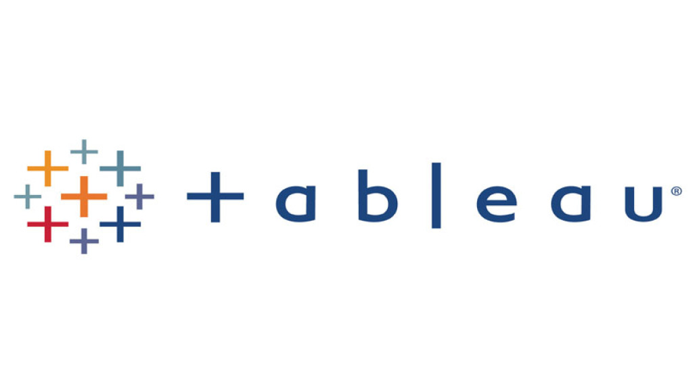

Aya Tarek Ahmed
Data Analyst & Business Intelligence Developer
I design end-to-end data & BI solutions that transform raw data into
actionable insights for business, sales, and operations.
2.5+ years of experience delivering production-ready dashboards,
data warehouses, forecasting models, and automation solutions using
Power BI, SQL, Python, ETL, OLAP, Power Apps & Cloud Platforms.
üìç Cairo, Egypt |
GitHub |
LinkedIn
Core Technologies & Expertise
Power BI • SQL Server • Python • ETL & Data Warehousing • SSIS / SSAS / SSRS •
Forecasting & RFM Segmentation • Power Apps & Power Automate • Azure & BigQuery
Business Intelligence & Automation Developer – Organo
Designed and delivered enterprise-level Power Apps and
Power Automate solutions to streamline internal operations,
document tracking, approvals, and reporting workflows.
- Built canvas apps integrated with SharePoint & Dataverse for business process automation
- Automated approval flows, alerts, and SLA-based notifications using Power Automate
- Integrated Power BI datasets with automated reporting and scheduled email distributions
- Reduced manual operational effort and improved data accuracy across departments

Excel Projects

Advanced Excel dashboards and data analysis projects.
View
Power BI Projects

Enterprise dashboards, DAX modeling, and performance optimization.
View
Tableau Projects

Interactive Tableau dashboards and visual storytelling.
View